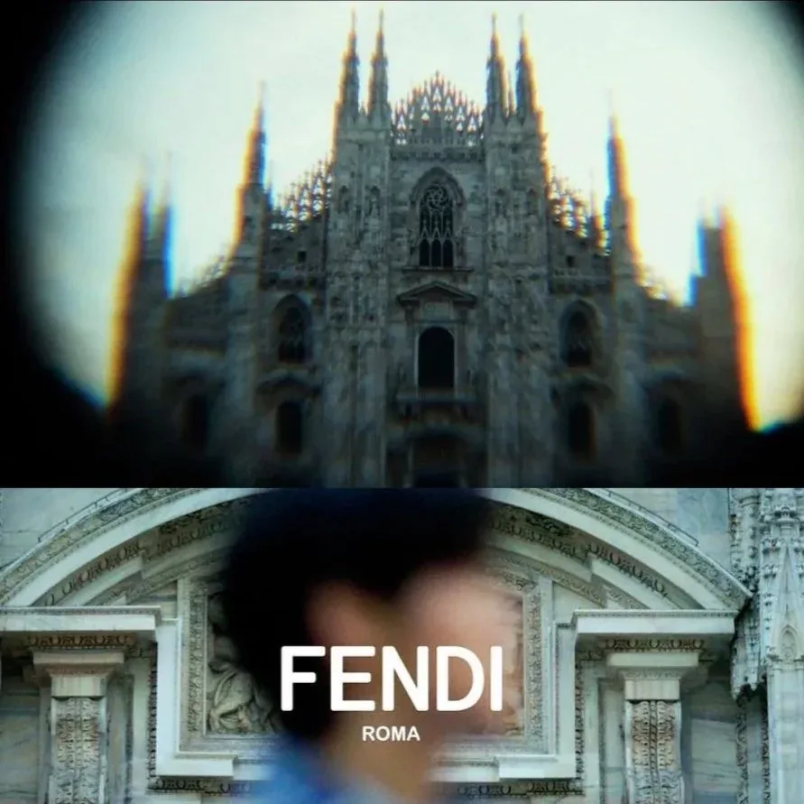
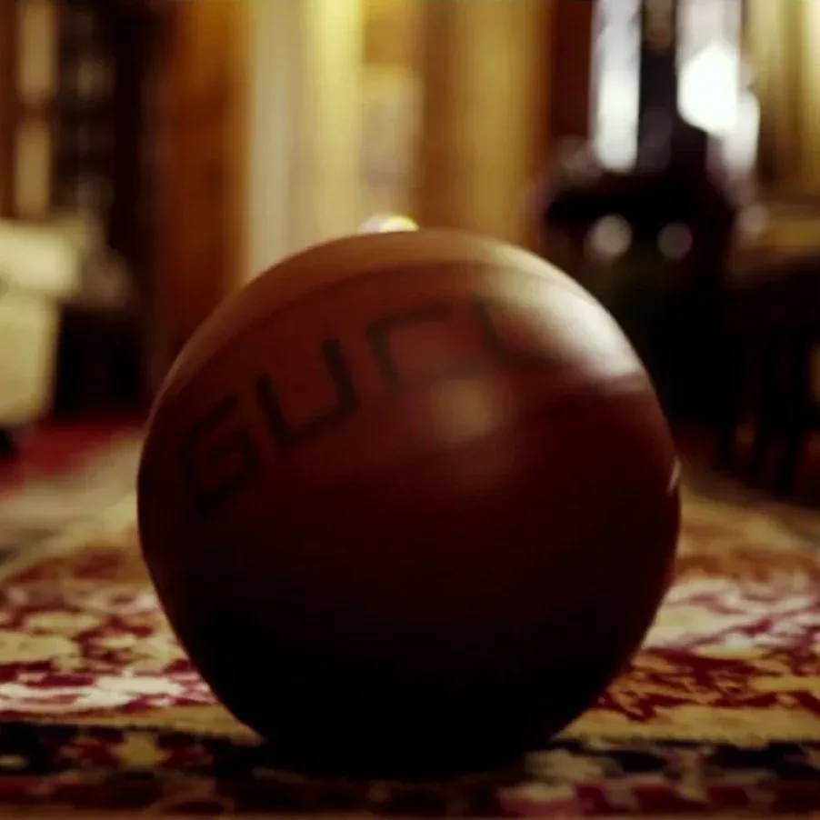
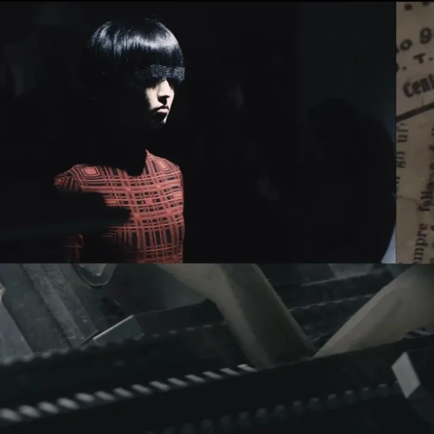
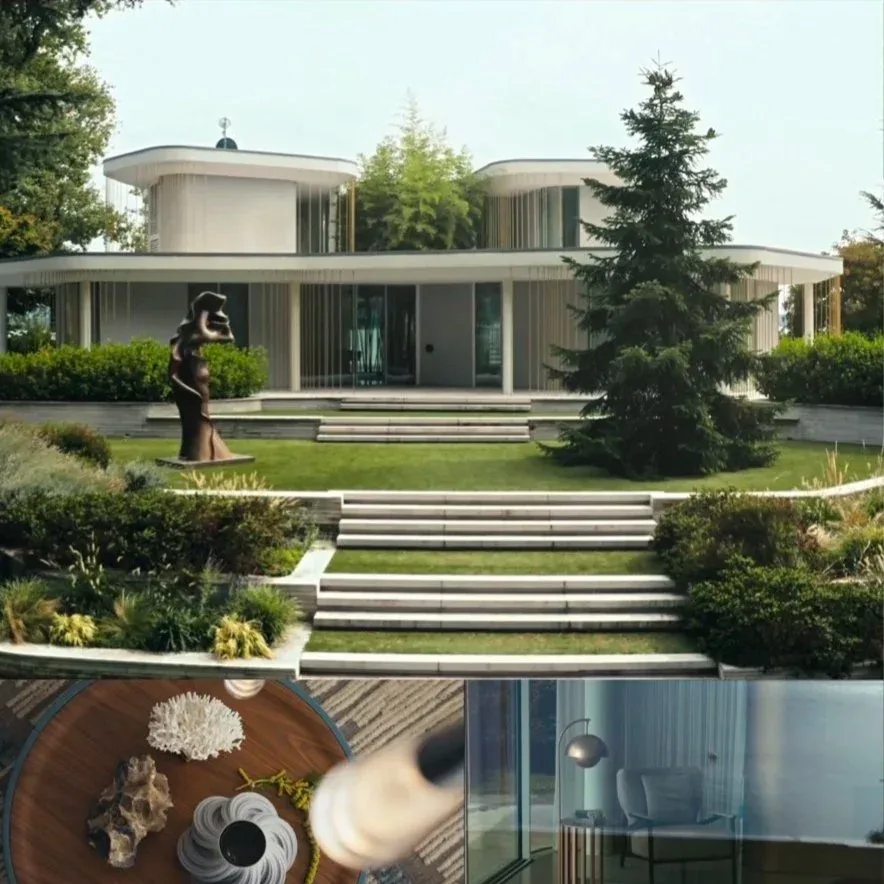
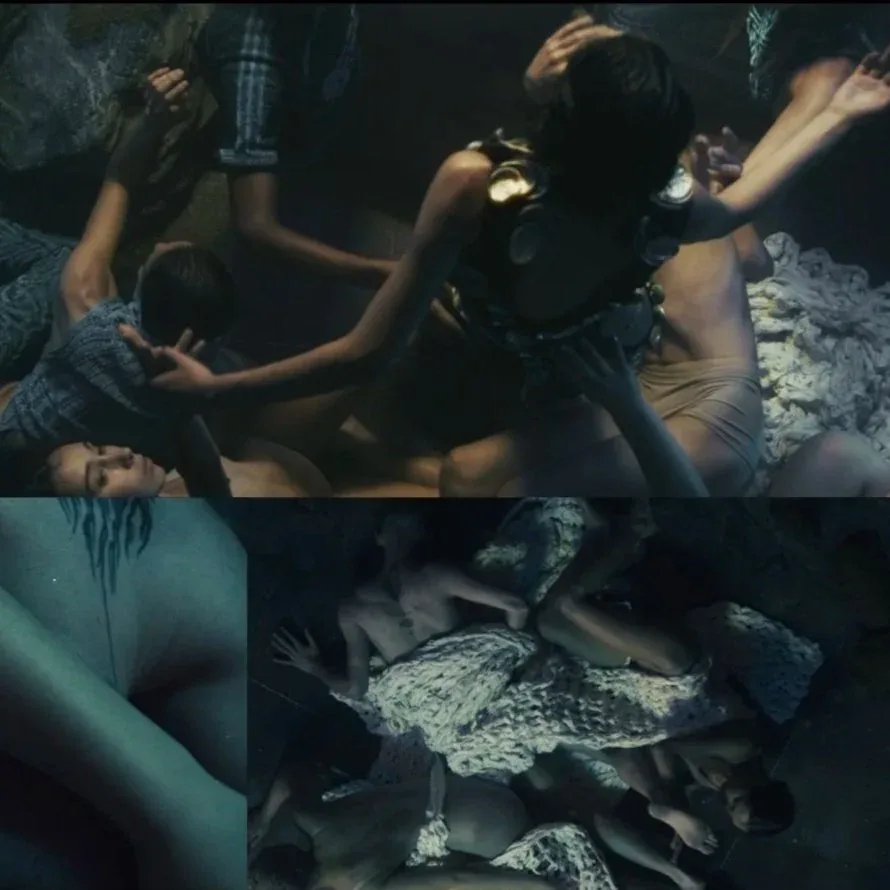
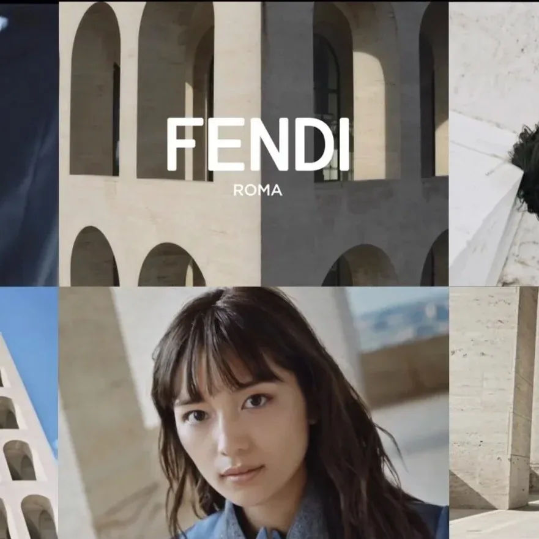
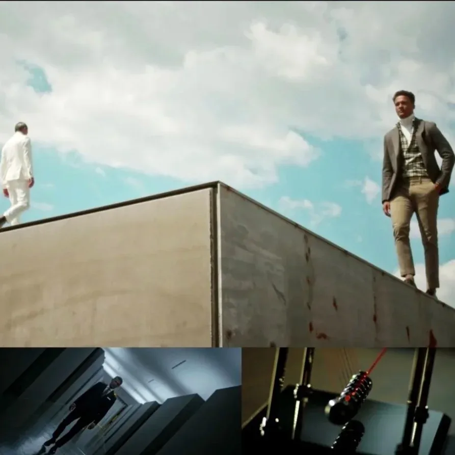
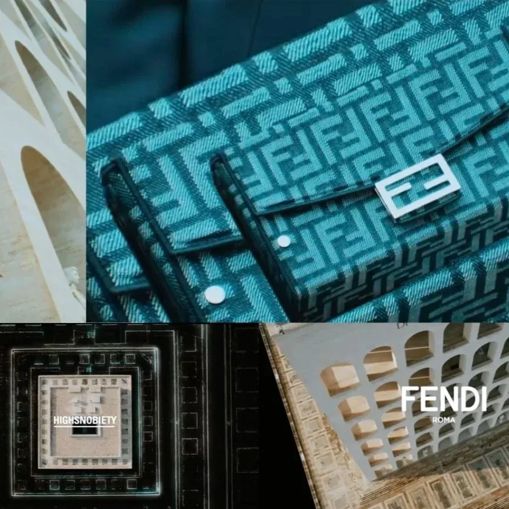
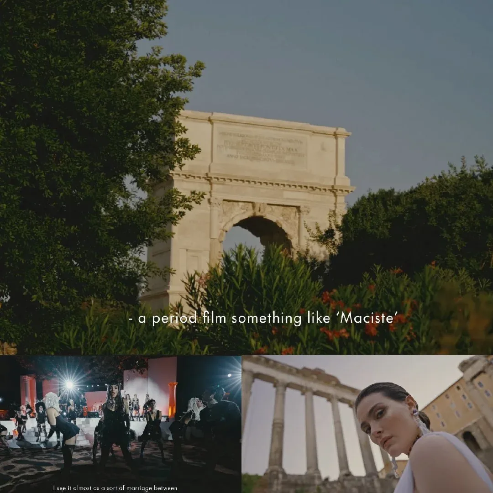
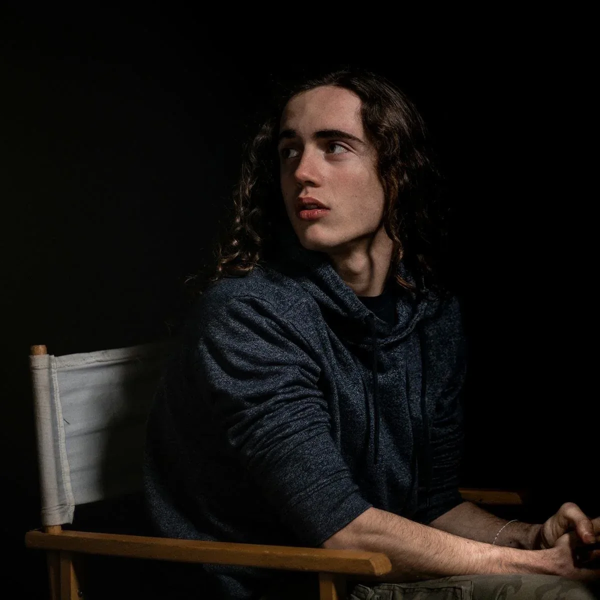

Fashion & Design

Fendi x REN Meguro - MFW 24
Watch
Cabana X Gucci
Watch
Uniforms - Pecoranera
Watch
Turri- Italian Perfection
Watch
Conchiglie - Pecoranera
Watch
Haruna Kawaguchi - Fendi
Watch
Dan John AW 22/23
Watch
Highsnobiety - Fendi
Watch
Dolce&Gabbana Alta Moda 2025
WatchMusic
About

Eugenio Saravo was born in Rome in 2001.
In 2016 he began his professional career as a filmmaker.
He creates music videos and fashion commercials for the likes of Fendi, Sony Music and many more.
At the same time he writes, directs and produces documentaries and short films.